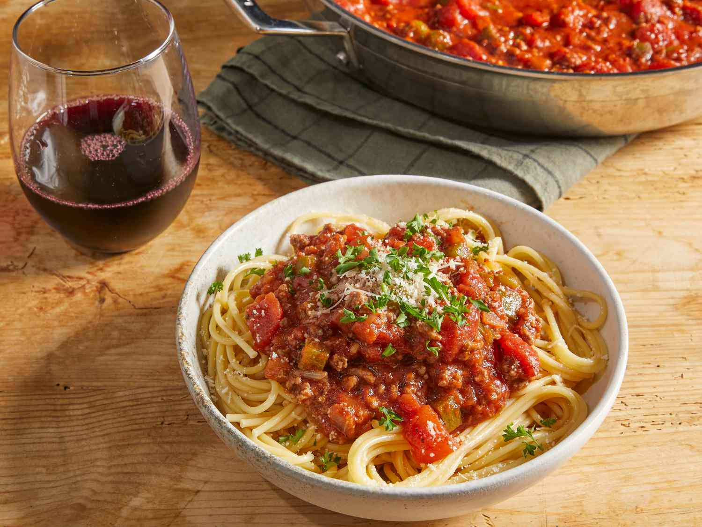

Odin Recipes
Nice recipes to practice HTML and CSS!
-

posted by Lucas Antunes
GNOCCHI
Recipe here!Gnocchi (singular gnocco) are Italian dumplings made with flour, eggs, and potatoes.

-
posted by Lucas Antunes
SPAGHETTI
Recipe here!This homemade spaghetti sauce with ground beef recipe will satisfy all your comfort food cravings.

-
posted by Lucas Antunes
LASAGNA
Recipe here!This lasagna recipe takes a little work, but it is so satisfying and filling that it's worth it!